AI Academy · Level 3 · Grade 8 · Week 22 · Student lesson
Requests Responses and JSON
Learn to understand, design, build, test and explain AI systems responsibly.
Project: Verified Study Buddy
Before you start
Week 8: JSON validity is separate from value correctness.
Plan time to read, investigate and explain. Keep predictions separate from observations.
Student lesson · 1 of 14
Your mission
Your learning target
I can parse JSON into Python records.
I can validate data after parsing.
I can document input and output contracts.
Remember before reading
Close your notes first. A rough first answer helps us choose the right starting point; it is not a score for your ability.
Without opening the old lesson, explain one key idea from Tools and APIs. Give an example and a mistake that the idea helps you avoid.
Without opening the old lesson, explain one key idea from User Need and AI Contribution. Give an example and a mistake that the idea helps you avoid.
Without opening the old lesson, explain one key idea from Verify Numbers and Dates. Give an example and a mistake that the idea helps you avoid.
After trying, check the relevant lesson or ask your teacher. Change the part of your explanation that the evidence shows was wrong.
Week 22: Requests, Responses, and JSON
Clear interfaces specify fields, types, errors, and ownership.
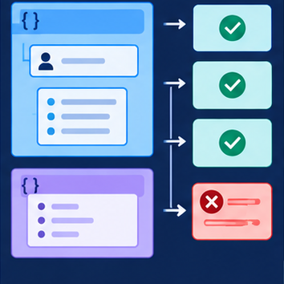
CREATOR MISSION
Validate sample request/response objects.
Creator name and date:
Readiness for the connected explanation
Why is reading text different from validating it?
This week’s end goal
By the end, I can explain requests responses and json using a traced example and a stated limitation.
Student lesson · 2 of 14
Notice the evidence
PICTURE STORY
Notice → Predict → Explain
Begin with visible evidence. Do not explain more than the picture and information support.
MYSTERY
The learners must use requests, responses, and json to solve a problem. What information do they have? What decision or calculation do they make? What would count as evidence that it worked?
Three observations (what you can point to):
My prediction and the clue supporting it:
A closer explanation
A fictional activity service supplies JSON text. The input contract is a JSON object with name text and minutes an integer from 0 through 60. The output contract will be a record with accepted and minutes fields. Parsing valid JSON is only the first step.
Student lesson · 3 of 14
See how it works
VISUAL MECHANISM
Input → Process → Output
Trace the information. At each stage, ask what changed and how you could test it.
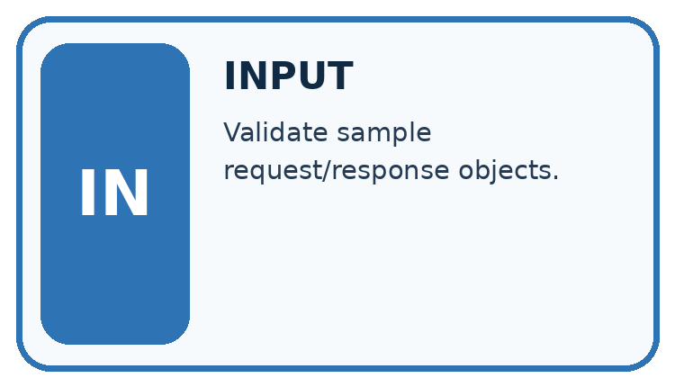
↓
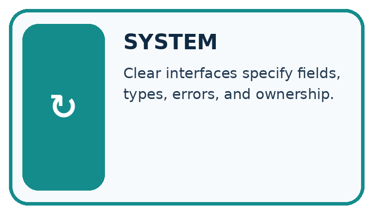
↓
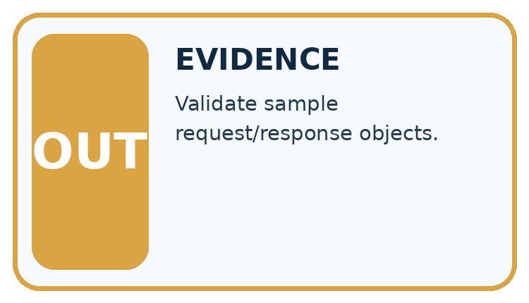
Which stage could fail even when the other two are correct? Explain:
A closer explanation
import json
text = '{"name": "Sketch", "minutes": 12}'
record = json.loads(text)
valid = (type(record) is dict
and type(record.get("name")) is str
and len(record["name"]) > 0
and type(record.get("minutes")) is int
and 0 <= record["minutes"] <= 60)
result = {"accepted": valid, "minutes": record.get("minutes")}
print(json.dumps(result))Follow the evidence
The output is {"accepted": true, "minutes": 12}. JSON uses lowercase true, false and null; Python uses True, False and None. json.loads converts between representations. The worked output line assumes the parsed top-level value is a dictionary; a robust interface must reject other top-level types before accessing fields.
Check the envelope before its fields
JSON is a text format for exchanging values. Parsing asks whether the text follows that format. Schema checking asks whether the parsed value has the structure and values your task requires. Start by checking that the whole value is an object, represented here by a Python dictionary. Only then look up name and minutes. A valid JSON list is still the wrong top-level structure for this contract. Syntax success and acceptance are separate decisions.
Connect the picture and the explanation
Point to the input, the deciding step and the result in this week’s visual. Explain the same step in ordinary words. A picture helps when you can say what each part represents.
Student lesson · 4 of 14
Compare the cases
CASE GALLERY
Four Tests, Four Kinds of Evidence
A system is not understood until it survives more than one comfortable example.


NORMAL CASE: predict and name evidence. BOUNDARY CASE: predict and name evidence.


MISSING INFORMATION: predict and name evidence. TRANSFER CASE: predict and name evidence.
Which case is most likely to reveal a hidden assumption? Why?
Change one thing in the pictured case
Change: Replace 12 with the text "12".
Prediction: Reject the response under this strict contract.
Reason: Digits inside quotes represent text, whereas portions requires an integer.
Student lesson · 5 of 14
Words that unlock the idea
VOCABULARY LAB
Words You Can Use to Reason
A definition matters when you can recognize the idea, use it, and contrast it with a near-miss.
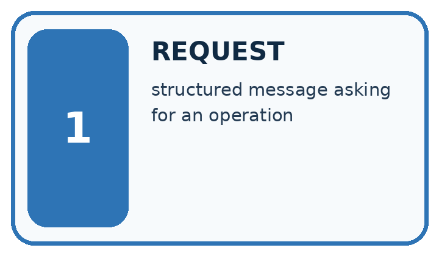
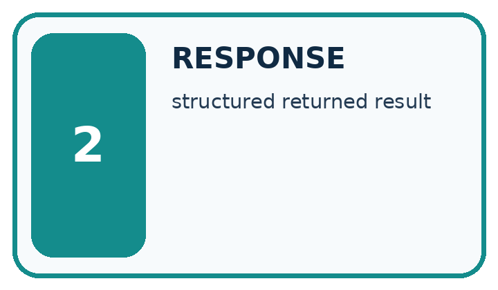
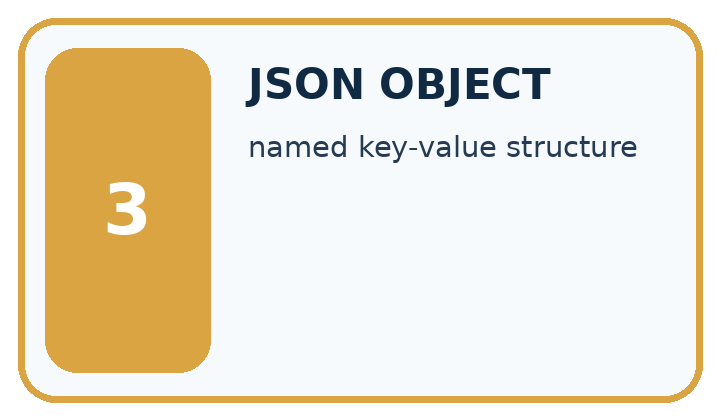
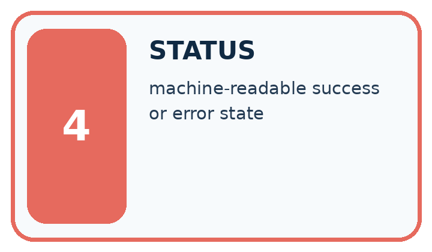
| Word | My own example | Not this / boundary |
|---|---|---|
| request | A message asking a system to return information or perform an action. | |
| response | The information or status returned after a request. | |
| JSON object | A collection of named fields and values written using JSON syntax, such as {"pages":80}. | |
| status | A reported condition of a request or process, such as success, pending or error. |
Words used in the closer explanation
| Word | Meaning |
|---|---|
| JSON | A text format for structured values |
| Parsing | Converting formatted text into program values |
| Interface | The agreed way one part of a system exchanges data with another |
| Contract | Specified inputs, outputs and error behavior |
Student lesson · 6 of 14
Follow a worked example
WORKED EVIDENCE
Reason Step by Step
Predict first. Then check each step. A correct answer without visible reasoning is incomplete evidence.
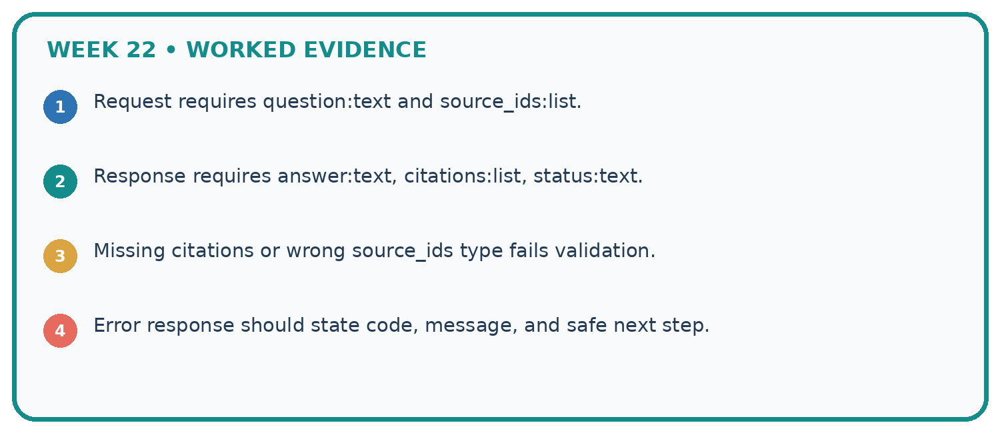
1. Request requires question:text and source_ids:list.
2. Response requires answer:text, citations:list, status:text.
3. Missing citations or wrong source_ids type fails validation.
4. Error response should state code, message, and safe next step.
Recalculate, retrace, or restate the reasoning in your own representation:
CHECK Did the evidence answer the exact question? Did the total, path, or source record stay consistent?
A closer explanation
Learn from the worked case
Cover the result before checking it. Say what is given, choose the procedure, and follow one step at a time. Then uncover the result and explain your first mismatch. Ask why a step is allowed, not only what number it produces.
A pictorial worked case: Requests Responses and JSON
A lunch-count response must satisfy a declared JSON contract.
The facts we will use
The toy response has exactly class_code text and portions integer 0..30. Example: {"class_code":"R8","portions": 12}.
All inputs and outcomes in this worked example are invented classroom data; no real model run is claimed.
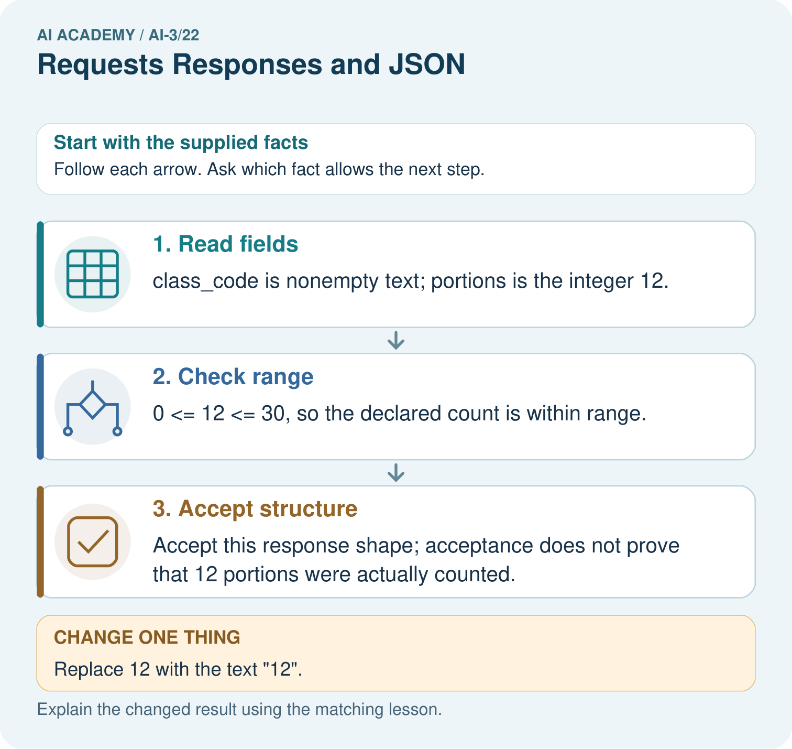
Read the picture one step at a time
Why this result follows
Read the picture in order. Accept this response shape; acceptance does not prove that 12 portions were actually counted. The arrows show which recorded input or intermediate result each decision uses. Explain the deciding step aloud before checking the changed case; pointing to the final answer alone does not show how it follows.
What this example does not establish
JSON well-formedness, schema validity and real-world truth are different checks.
Student lesson · 7 of 14
Find and repair a mistake
ERROR DETECTIVE
Compare → Diagnose → Repair
Do not patch the answer. Find the earliest unsupported assumption, wrong step, or weak evidence.
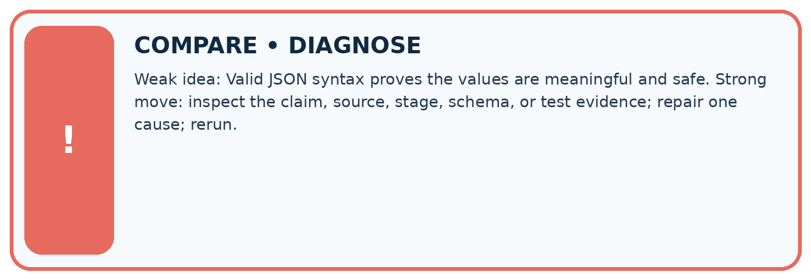
| Evidence record | Expected | Actual | Likely cause / next test |
|---|---|---|---|
| normal case | works | ||
| boundary case | stated rule | ||
| missing input | safe response | ||
| fresh transfer | generalizes |
Repair one cause. Why is this repair better than changing several things?
A closer explanation
An interface should state what happens for malformed text, wrong structure and invalid values. Do not expose raw private input in error messages. Use only the fictional records supplied for practice.
Student lesson · 8 of 14
Practise together
LOGIC STUDIO
Specify Before You Run
Prompts, schemas, retrieval, tool calls, and code are inspectable parts of one AI product.

SET task, audience, constraints, output_schema LOAD approved_context or retrieval_result CALL model or allowed_tool VALIDATE fields, claims, citations, and safety IF evidence missing: ask, retrieve, or abstain RETURN useful output + source trail + limitations
Trace one input. Which line changes the state or chooses a path?
A closer explanation
Single quotes around property names are not valid JSON syntax. Use double quotes in the JSON text. If the whole parsed value is a list, do not call .get on it: check the top-level type first and report a schema failure.
Practise with less help: Separate failures
Use workbook W2 for the connected example “JSON and interface contracts”. First fill the input and rule boxes. Try the middle steps before asking for a hint. After a hint, try the next step yourself.
| Plan | Do | Check |
|---|---|---|
| What is given? Which rule or procedure applies? | Record each intermediate step. | Does the result follow? What remains unknown? |
Explain your trace to a partner. Your partner points to one step to check. Swap roles on the next case. Each person writes their own explanation.
Check your reasoning
Use the worked case for JSON and interface contracts. Proposed explanation: “A successful run proves the conclusion”. Decide whether this explanation is supported. Point to the step or supplied fact that decides; explain your repair if needed.
Answer on your own before discussion. If you are unsure, say which step you need help with.
Explain the picture
Would converting the text silently prove the source count is correct? Point to the relevant step in the picture, then write the changed result and the rule or evidence that supports it.
This is supported practice. Keep the separately named independent case for an attempt before feedback.
Student lesson · 9 of 14
Run the investigation
EVIDENCE LAB
Predict → Test → Record → Explain
Keep expected and actual results separate. Surprises are useful data when recorded honestly.
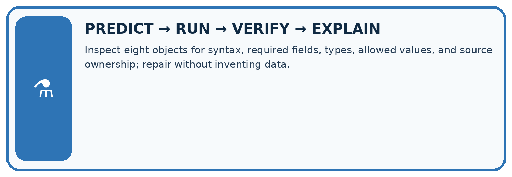
Inspect eight objects for syntax, required fields, types, allowed values, and source ownership; repair without inventing data.
| Test / input | Prediction | Actual | Evidence / calculation | Change or keep? |
|---|---|---|---|---|
| normal | ||||
| boundary | ||||
| missing | ||||
| fresh transfer |
What did the hardest test teach you that the normal test did not?
Plan → try → check
Before trying: what do I expect, and why? While trying: which step could first go wrong? Afterwards: what did I actually observe, and what should change? Keep “not run” if you only traced the procedure.
Student lesson · 10 of 14
Build your understanding
MASTERY
From Knowing the Word to Owning the Idea
Move upward only when you can produce evidence without copying the worked example.

1 • NAME: Define the concept without repeating the textbook.
2 • TRACE: Show the information, state, branch, calculation, or evidence path.
3 • APPLY: Solve a different example independently.
4 • CHALLENGE: Find a boundary case, counterexample, or unfair outcome.
5 • EXPLAIN LIMITS: Say when the result should not be trusted or used alone.
My strongest evidence of independent understanding:
Student lesson · 11 of 14
Connect your project
CUMULATIVE PROJECT
Verified Study Buddy
Every week adds one inspectable piece. The system must show how it reached a result.
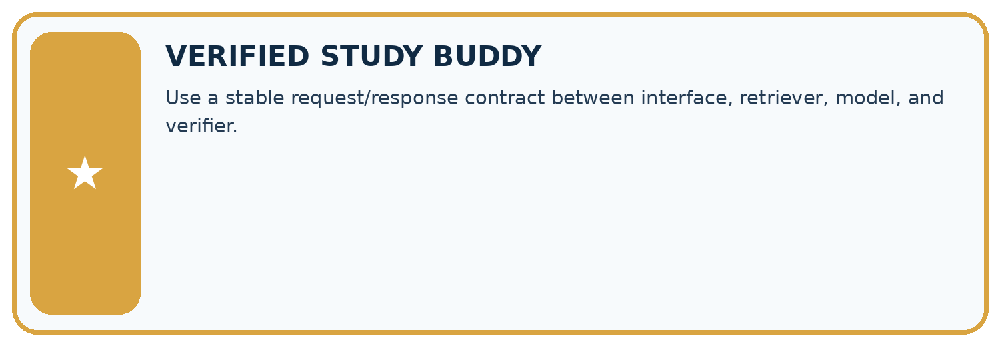
THIS WEEK’S CHECKPOINT Use a stable request/response contract between interface, retriever, model, and verifier.
SYSTEM MAP Learner need → prompt/schema → approved sources/retrieval → model/tool → structured answer → verification → human decision
What will you add, change, or verify in the project this week?
What should remain under human control?
RESPONSIBLE DESIGN Collect only necessary information. Show uncertainty and limits. Never confuse fluent output with verified truth.
Evidence for your project
For your Verified Study Buddy, save the input, procedure, observed result and limitation of this check. Label this worked example as practice; use a different, previously unreviewed case when checking independent understanding.
Student lesson · 12 of 14
Show what you know
INDEPENDENT MASTERY PROOF
Explain • Transfer • Test • Defend
Complete this page without copying the worked example. Your reasoning matters more than decoration.
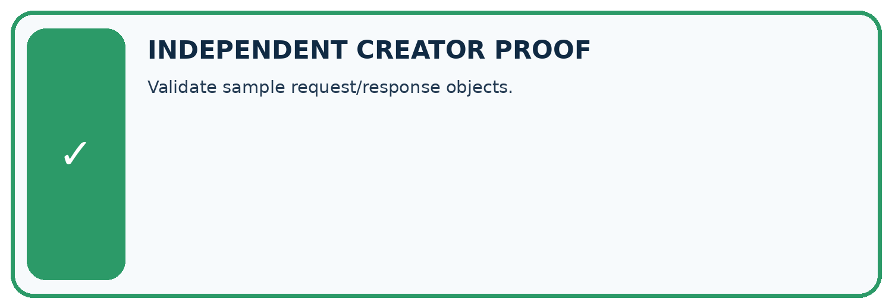
CHALLENGE Validate sample request/response objects.
1. My fresh example, trace, calculation, or design:
2. My evidence that it works (include a boundary or missing-data case):
3. One limitation, fairness concern, or situation needing human review:
SELF-CHECK □ I explained the mechanism □ I used evidence □ I tested a fresh case □ I named a limitation □ I can answer ‘why?’
Student lesson · 13 of 14
Study a complete case
Week 22 Worked case
Use the supplied details to practise the weekly concept before attempting the independent question. This case extends the illustrated lesson.
The situation
Request is for B7; response is {"id":"B7","pages":120}. Another response has malformed JSON.
The question
What checks precede use?
Worked explanation
Request success, JSON validity, matching id, required fields and numeric type. Handle malformed responses explicitly.
Explain it in your own words
Which detail supports the answer, and why does it matter?
Trace the supplied case visually
Validate the API response before using it
| Evidence or stage | Value or result |
|---|---|
| Request success | Handle failure explicitly |
| JSON syntax | Reject malformed data |
| Identity | id must match B7 |
| Field type | pages must be numeric 120 |
Request is for B7; response is {"id":"B7","pages":120}. Another response has malformed JSON.
What checks precede use?
Request success, JSON validity, matching id, required fields and numeric type. Handle malformed responses explicitly.
Student lesson · 14 of 14
Try a new case independently
Independent case: Specify independently
Define a JSON contract for {"label": "Box", "count": 4}: nonempty text label, integer count 0 through 10. Give a valid case, a wrong-type case and a missing-field case with expected acceptance.
Attempt this case before feedback. Record any help. Earlier examples below are further practice; a case already practised with feedback cannot establish fresh transfer.
Week 22 Independent application
Close the worked explanation. Apply the idea to this different question without copying.
An API returns {"ok":false,"error":"not_found"}. Your app tries to display response.title. What should it do instead?
My answer, with a trace, calculation or supporting evidence
Create and test
Change one relevant detail. Predict the result before testing. Include a boundary or missing-information case when it helps reveal a limit.
My changed input and expected result
Connect to your project
Use a stable request/response contract between interface, retriever, model, and verifier.
The evidence I will keep
Your teacher has the independent answer and scoring criteria. Complete the matching workbook week to keep your practice evidence together.
Transfer practice from the original programme
Request id=7 returns status=200 and {"id":8,"pages":90}. Explain why a successful status is insufficient and specify the handling.
Use feedback to improve
Attempt the independent case before hints. Record whether you worked alone, used a hint or followed a model. After feedback, fix the first unsupported step and explain why it changed. A later check uses a changed case, not a copied answer.